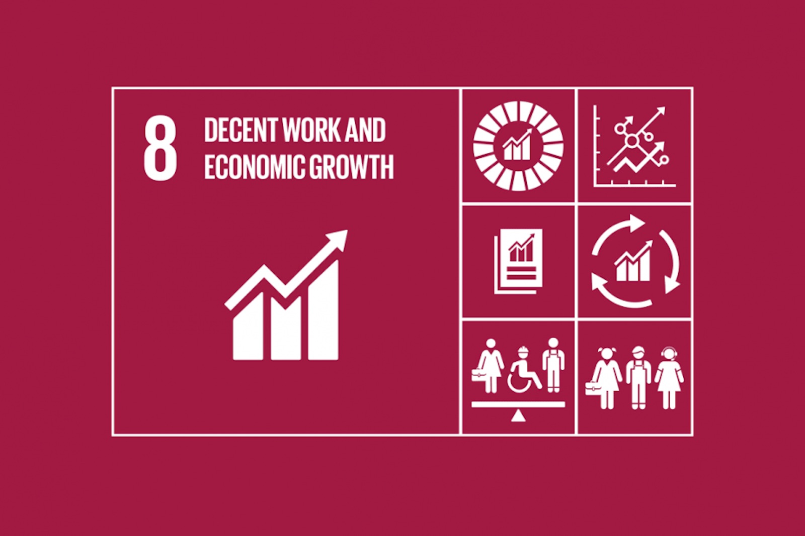
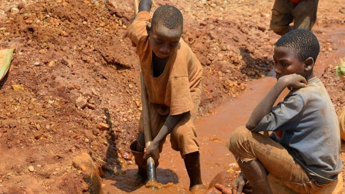
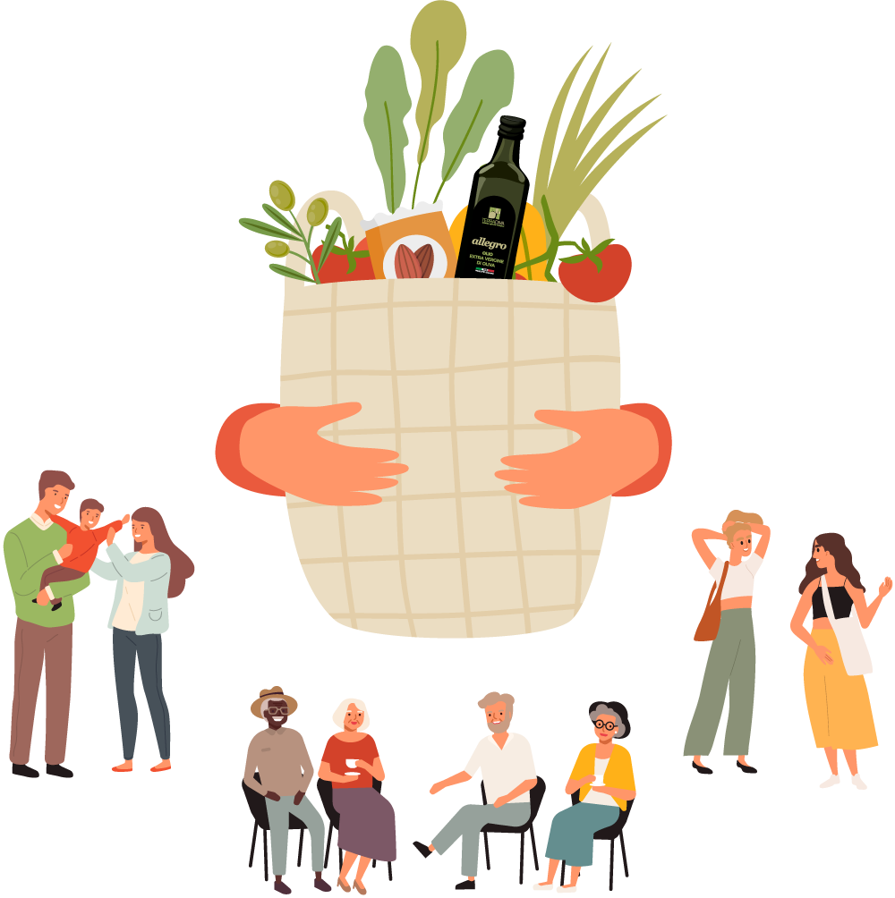

Obiettivo 8
Secondo i dati attuali, nel mondo sono più di 200 milioni le persone senza fonte di guadagno, soprattutto giovani. Lavoro e crescita economica contribuiscono in modo determinante a debellare la povertà. La promozione di una crescita sostenibile e di un’economia verde nonché la creazione di un numero sufficiente di posti di lavoro dignitosi, congiuntamente al rispetto dei diritti dell’uomo e dei limiti del nostro Pianeta, hanno un’importanza cruciale sia per i Paesi in via di sviluppo sia per quelli emergenti e industrializzati. L’obiettivo 8 comprende promuove la crescita economica, l’aumento della produttività e la creazione di posti di lavoro dignitosi. Un lavoro dignitoso significa un lavoro che sia produttivo e che assicuri un giusto reddito, che garantisca sicurezza sul luogo di lavoro e protezione sociale alle famiglie, così come prospettive di crescita personale e integrazione sociale. Il lavoro forzato deve essere contrastato e i fenomeni della schiavitù moderna e della tratta di esseri umani dovranno essere sradicati entro il 2030. L’obiettivo 8 esige pertanto il miglioramento, a livello mondiale, dell’efficienza nell’uso delle risorse nel consumo e nella produzione e persegue il disaccoppiamento della crescita economica dal degrado ambientale.
Sfruttamento nelle miniere del Congo
Secondo le ultime stime sono circa 40.000 i ragazzi e le ragazze minorenni impegnati nelle miniere del sud della Repubblica democratica del Congo. Molti di loro lavorano nelle miniere di cobalto, prezioso minerale utilizzato per la produzione di batterie ricaricabili utilizzate per i nostri cellulari, tablet, computer e altri dispositivi elettronici. Questi bambini lavorano in condizioni estreme, alcuni di loro più di dodici ore al giorno, senza alcuna protezione e percependo salari da fame. Rischiano ogni giorno incidenti sul lavoro a causa di carichi troppo pesanti fino alla morte a causa dei frequenti crolli nelle grotte artigianali. I bambini hanno raccontato le condizioni di terribile sfruttamento a cui sono sottoposti nelle miniere di cobalto. Un lavoro disumano e senza protezioni La maggior parte dei bambini sfruttati nelle miniere artigianali di cobalto lavora fino a 12 ore al giorno. Scavano le miniere a mani nude e sono costretti a trasportare sacchi anche di 20 e 40 kg, spesso più pesanti di loro stessi. La maggior parte dei bambini dichiara di guadagnare tra 1.000-2.000 franchi congolesi al giorno (1-2 euro). I bambini che hanno raccolto, ordinato, lavato, frantumato e trasportato minerali vengono pagati per ogni sacco di minerali dai commercianti. Non hanno modo di verificare indipendentemente il peso dei sacchi o il grado del minerale e, quindi, devono accettare ciò che gli operatori pagano. Fuga scolastica e povertà I bambini che vanno a scuola lavorano dopo l’orario delle lezioni, durante il fine settimana e le festività. Altri bambini hanno invece dovuto abbandonare la scuola, dal momento che i loro genitori non hanno un impiego formale e non possono permettersi le tasse scolastiche. Tuttavia, a causa della mancanza di finanziamenti adeguati da parte dello stato, la maggior parte delle scuole carica ancora i genitori di un importo mensile per coprire i costi, come gli stipendi degli insegnanti, le divise e il materiale didattico. Il cobalto è tra i minerali più richiesti dalle grandi industrie elettroniche. Più della metà della fornitura mondiale di cobalto proviene dalla Repubblica democratica del Congo. Secondo le stime del governo, il 20% del cobalto attualmente esportato dalla Repubblica democratica del Congo proviene da minatori artigianali nella parte meridionale del paese.
Gruppo di scambio solidale
I gruppi di acquisto solidale (GAS) sono gruppi d'acquisto, organizzati spontaneamente, che partono da un approccio critico al consumo e che vogliono applicare i principi di equità, solidarietà e sostenibilità ai propri acquisti (principalmente prodotti alimentari o di largo consumo). Tale obiettivo è realizzato primariamente attraverso la disintermediazione della filiera: anziché rivolgersi alla Grande Distribuzione Organizzata (GDO) o ad altre forme di intermediazione, i GAS acquistano direttamente dai produttori, precedentemente selezionati dai GAS stessi sulla base di criteri definiti internamente da ciascun GAS. Tra questi criteri vi sono solitamente la sostenibilità ambientale, la solidarietà verso il produttore e la qualità dei prodotti. Sono formati da un gruppo di persone che decidono di unirsi per organizzare i loro acquisti, privilegiando i prodotti locali della filiera corta e i produttori che garantiscono non solo la qualità, ma anche dignità del lavoro all’interno delle loro aziende. I prodotti che vengono così acquistati hanno spesso prezzi inferiori rispetto a quelli che hanno presso i punti vendita, e riguardano un’ampia fascia di beni: da quelli alimentari a quelli dell’abbigliamento. Sono più di 800 i Gruppi di Acquisto presenti in Italia, con un ritmo di crescita davvero considerevole (50-60% annuo), anche se è difficile stabilire un numero preciso, perché molti rimangono a livello informale, senza aderire alle reti nazionali. Il primo GAS nasce a Fidenza, nell’anno del disastro di Chernobyl (1986), dall’esigenza da parte di un gruppo di consumatori di controllare e sapere che cosa trovavano quotidianamente nei loro piatti. Oggi la rete dei GAS si sta sempre più allargando. Una esperienza che si avvicina come filosofia a quella dei GAS sono i mercati contadini che hanno lo scopo di valorizzare i prodotti locali e difendere i loro produttori, ossia quei mercati che gli agricoltori organizzano direttamente in città per vendere al consumatore finale i frutti della propria terra. In Veneto sono già numerosi i mercati in cui i produttori agricoli vendono direttamente i loro prodotti.
